Writing, curating, and designing a copyright guide for design students.
Who Owns This Book? uses found articles, original writing, and famous examples of copyright cases to introduce design students and creators to ethical practices and principles for creating in the age of AI. How and when do you credit the sources of found imagery, found fonts, and references? Who owns the outputs and training data of AI? The book is designed to be a short, approachable guide for design students to display on a bookshelf and pick up when they need advice. It is also accompanied by bookmarks for quick access to the insights throughout the book.
Thanks to the writers featured: Elizabeth Goodspeed, Shannon Mattern, Molly White, Danielle McClune, Hito Steyerl, and Christine Schranz.
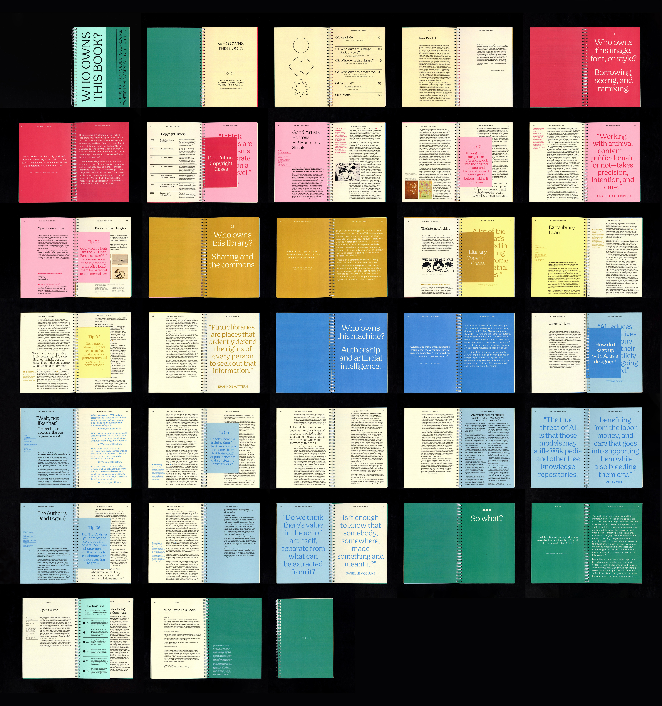
Who Owns This Book? is a colorful exploration into who owns the images, fonts, and information that we remix and borrow from as designers and creators.
The book is divided into three sections, each with a unique monochromatic color palette: 1) Who Owns This Image? Borrowing, seeing, and remixing, 2) Who Owns This Library? Sharing and the commons, and 3) Who Owns This Machine? Authorship and artificial intelligence. Short sheets throughout the book offer tips and best practices for designers as well as past and present case studies of copyright debates.
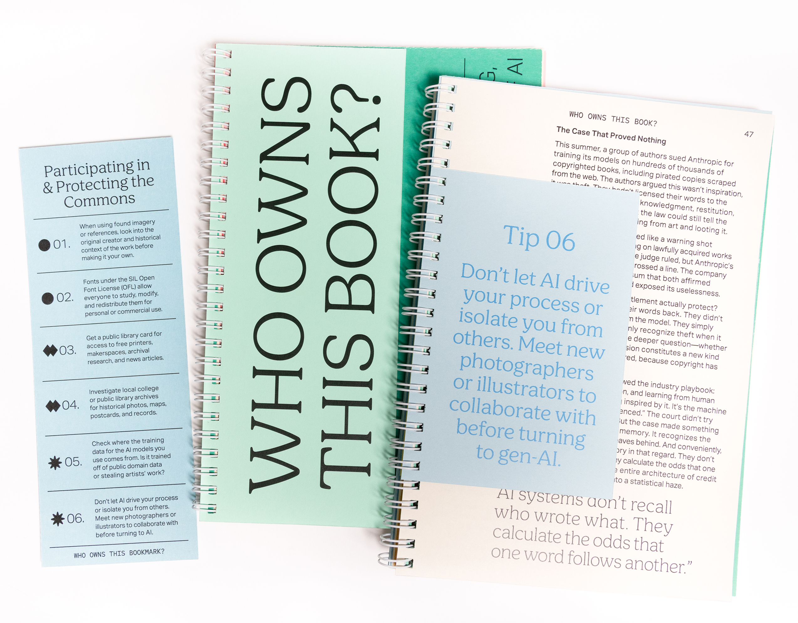
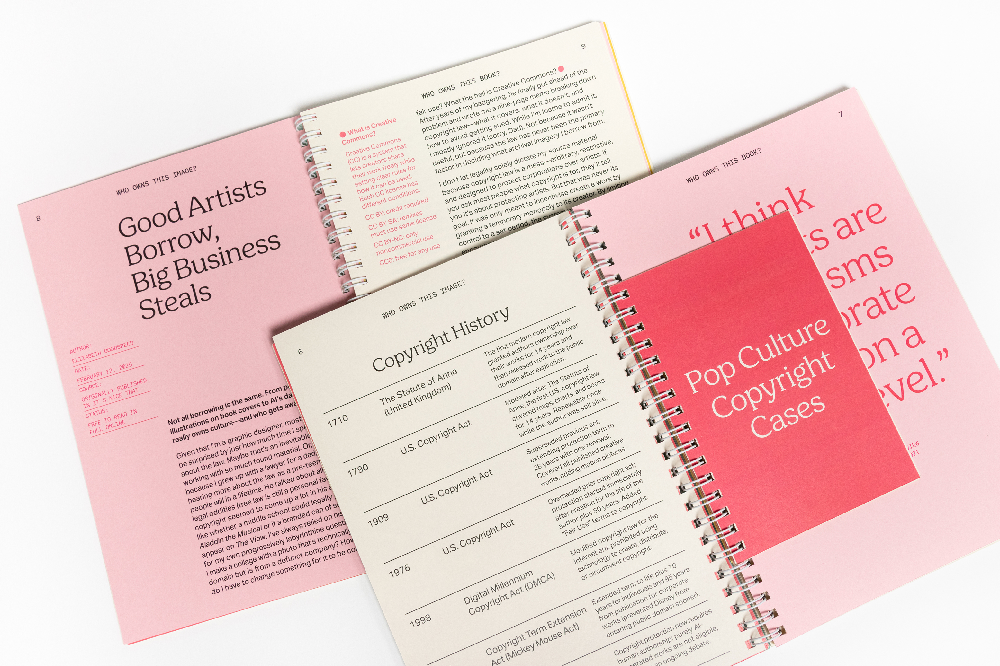
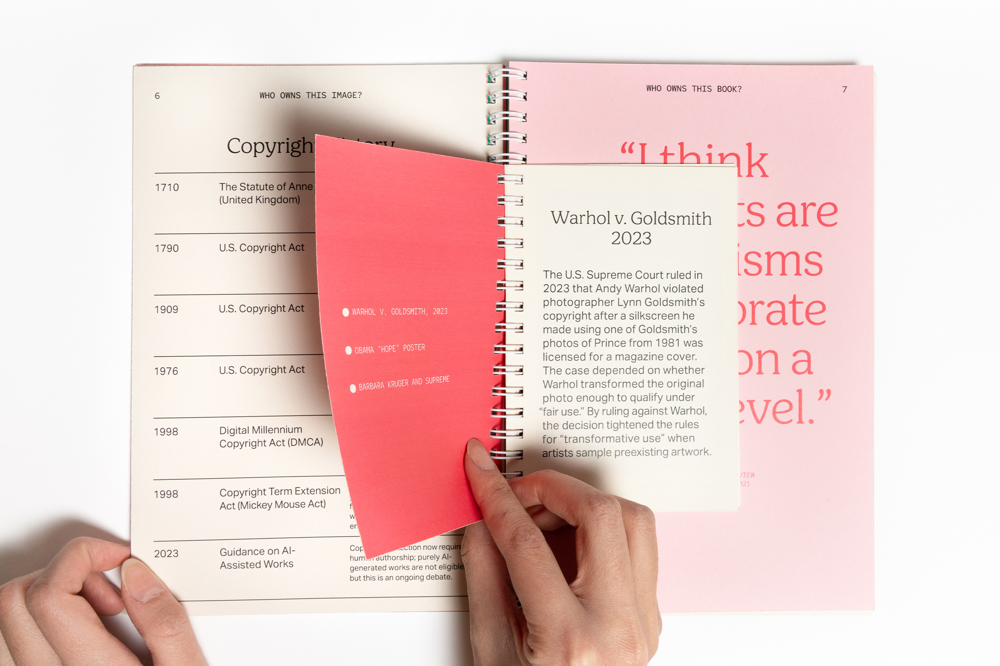
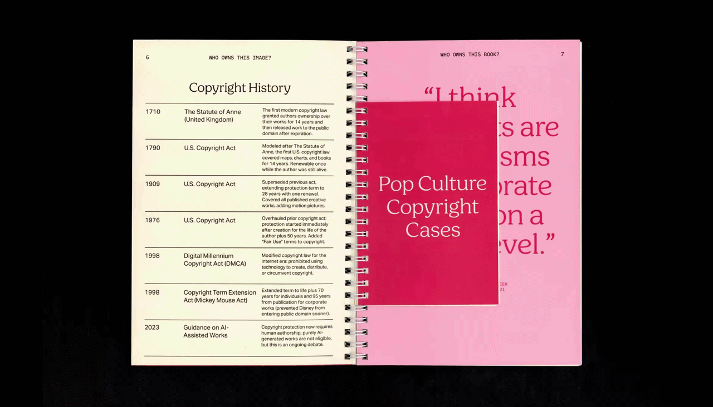
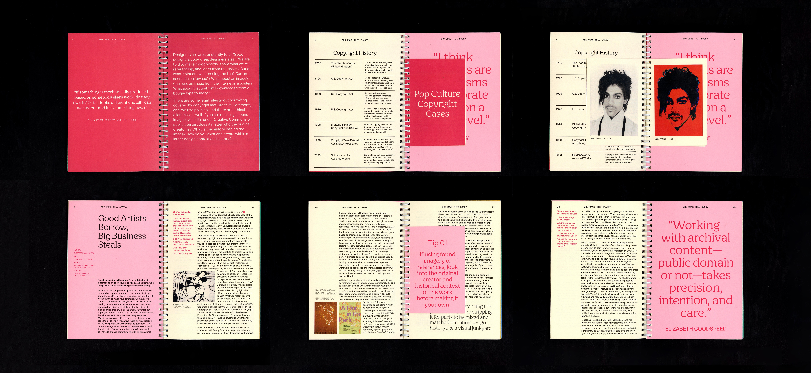
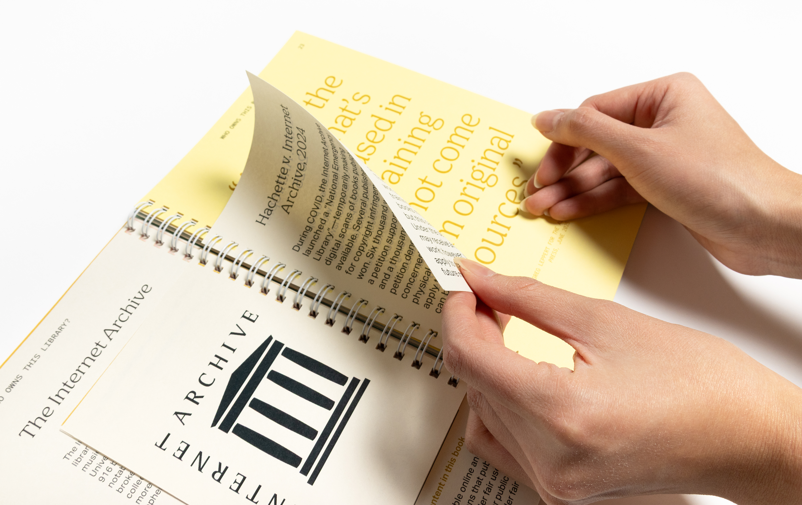
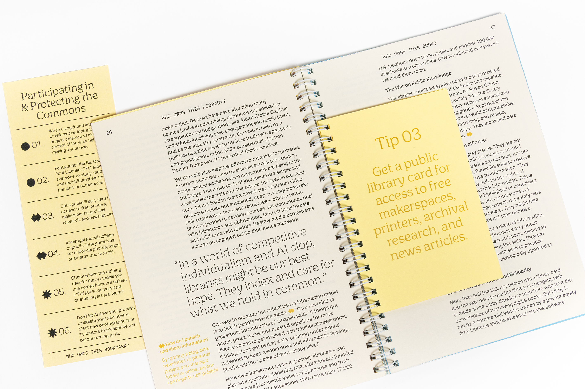
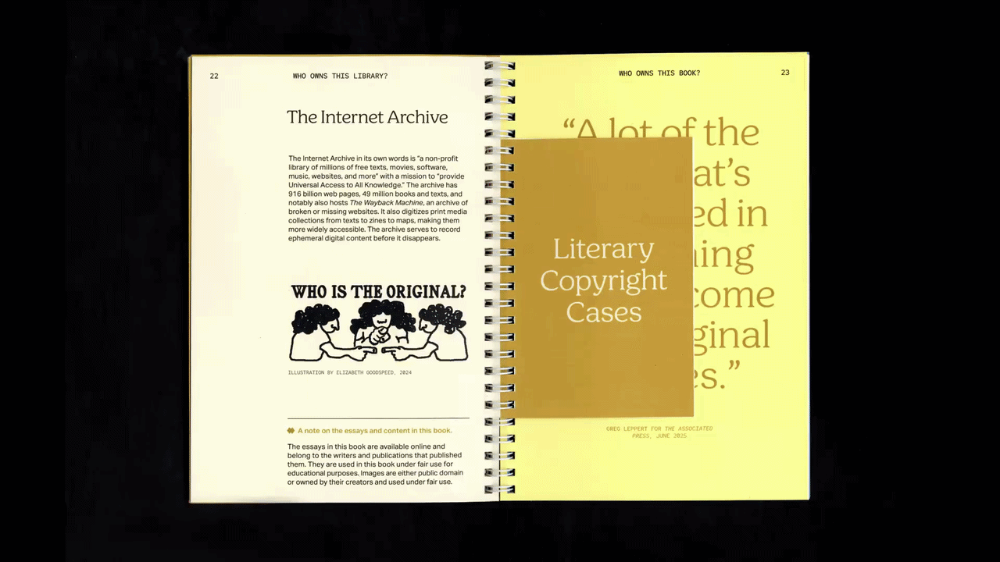
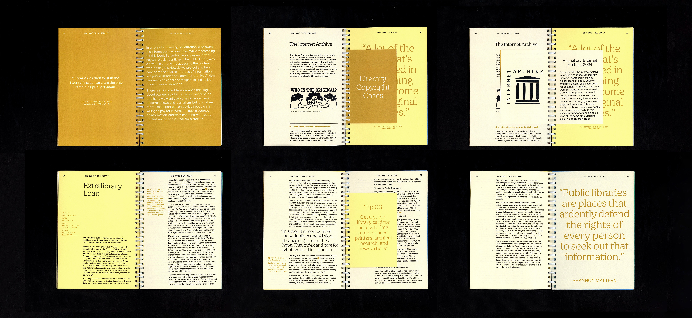
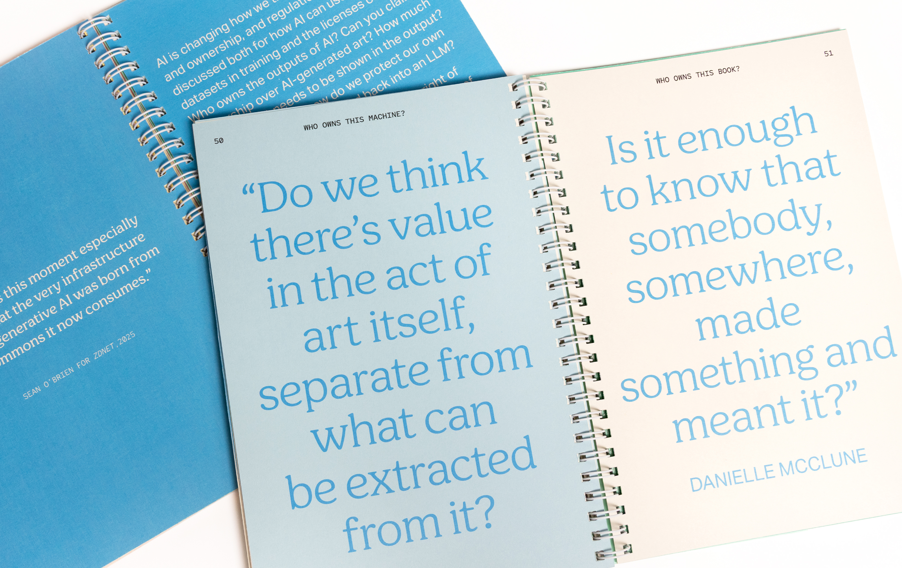
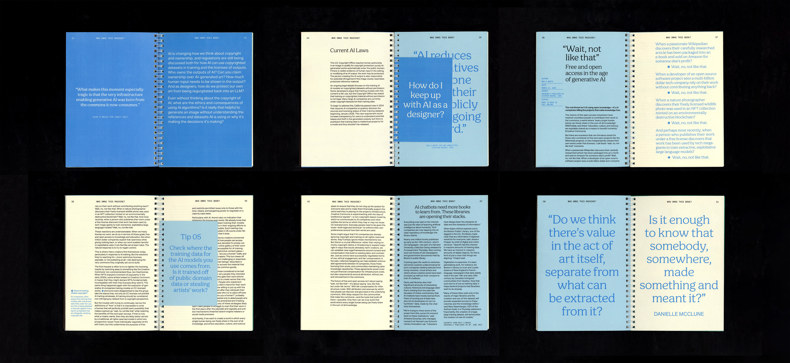
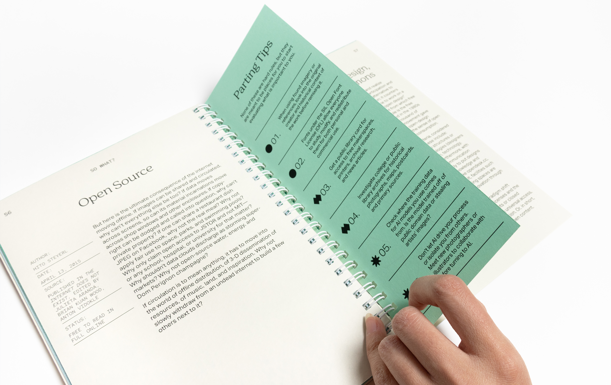
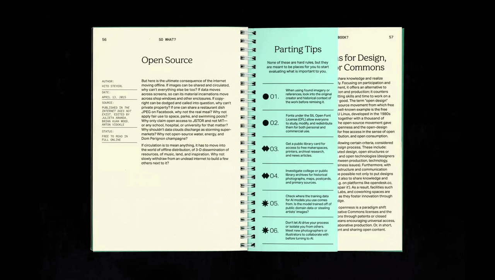
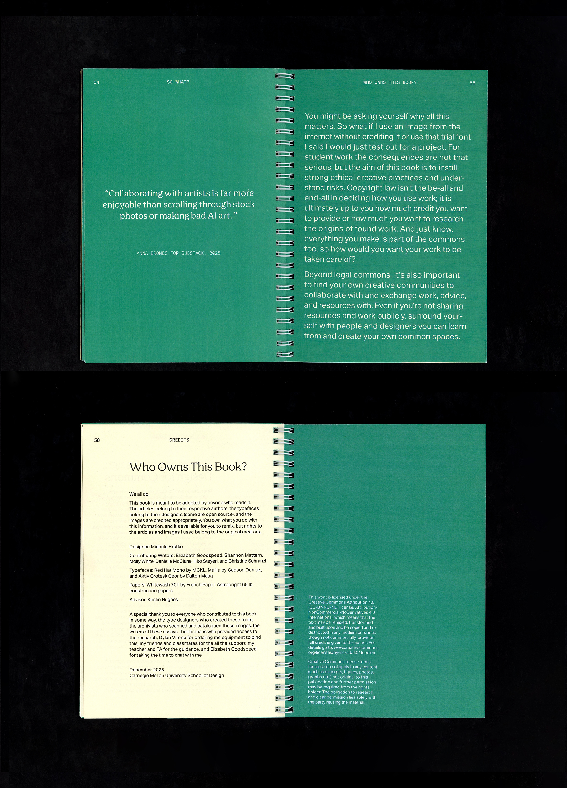
Bookmarks make the tips accessible!
Thank you
This book would not have been possible without the publicly available articles, fonts, and public domain images I used here. Thank you to the writers of the articles featured here including Elizabeth Goodspeed, Shannon Mattern, Molly White, Danielle McClune, Hito Steyerl, and Christine Schranz. Also, a special thank you to Elizabeth Goodspeed for inspiring this project and for having such a wonderful chat with me!